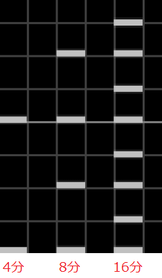
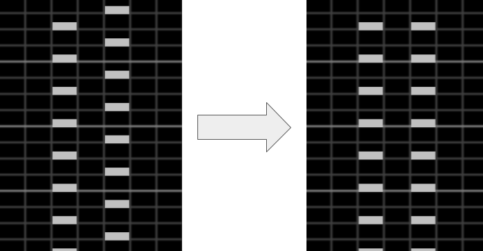
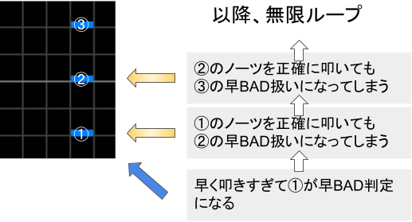
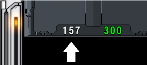
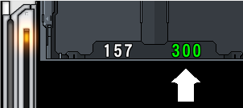
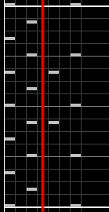
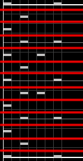
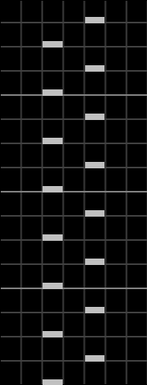

📑 文章目录（40 节）
- 基础术语
- 1～7 键、1～7 号键
- 4 分、8 分、16 分（音符）
- 馅蜜（餡蜜 / Anmitsu）
- BPM
- 彩 P / 闪光 GREAT（ピカグレ）
- 黄 G（黄グレ）
- 发光（光る）
- 发黄（黄ばむ）
- 空 POOR
- 卡 BAD（BAD ハマり）
- BP（Miss 数）
- 1 币、2 币、3 币……（1 クレ、2 クレ……）
- 选项相关
- 变速调速（Gear Change / ギアチェン）
- SUD+（上遮罩 / 挡板 / サドプラ）
- 白数字
- 绿数字
- 正谱（正规）
- 倍速（Hi-Speed / ハイスピ）
- 进阶意识・理论篇
- 读谱力（认识力）
- 地力
- 横向读谱（横认识）
- 硬按（ガチ押し）
- 死磕（粘着）
- 清〇〇灯（〇〇埋め）
- 目押
- 节奏押（音押）
- 谱面相关
- 灰（灰谱）
- 穴（穴谱）
- 纵连
- 皿曲
- 交互（Trill / トリル）
- 发狂
- 其他
- 专控（専コン）
- 街机手台（アケコン）
- DAO 台（DAO コン）
- 💬 评论区答疑
本文面向新手玩家，对 IIDX 常用术语进行讲解。其中包含了大量本站专栏《IIDX 进阶技巧集》中高频出现的词汇，建议务必提前了解。
基础术语
1～7 键、1～7 号键
指键盘按键开关的编号。无论 1P 侧还是 2P 侧，编号顺序都是共通的。

在 DP（双人模式）中则会写作“左 1 键”或“右 3 键”等。
4 分、8 分、16 分（音符）

表示音符时间间隔的称呼。“4 分”代表一小节的四分之一，“8 分”代表一小节的八分之一。此外还有 24 分、32 分等说法。
馅蜜（餡蜜 / Anmitsu）

将复杂谱面简化（例如把 16 分音符当作 8 分同时押）来处理的技巧。
BPM
表示乐曲速度的数值。BPM 200 是 BPM 100 的两倍，非常快。
彩 P / 闪光 GREAT（ピカグレ）
指「PERFECT GREAT」判定。因为判定字样会像彩虹一样闪闪发光，所以被如此称呼。
黄 G（黄グレ）
指「GREAT」判定。因为判定特效呈现黄色，所以得名。
发光（光る）
指频繁打出彩 P（P-GREAT）、准度分数很高的状态。（反义词：发黄）
发黄（黄ばむ）
指频繁打出「GREAT」或「GOOD」、很难打出高分的状态。（反义词：发光）
空 POOR
指不小心多按了一下键时出现、但不会断连击（Combo 照常延续）的 POOR 判定。
卡 BAD（BAD ハマり）

在同一个键位连续出现音符的谱面中，提前用 BAD 判定吃掉了后面一颗音符，导致后续明明按准了节奏却接连全部变成 BAD 判定的连锁现象。
BP（Miss 数）
BAD + POOR 的简称。
1 币、2 币、3 币……（1 クレ、2 クレ……）
“クレ”是 Credit（投币次数）的简称。1 クレ = 游玩 1 次的意思。“100 日元 2 クレ”就是花 100 日元可以玩 2 局。
选项相关
变速调速（Gear Change / ギアチェン）
作为应对变速剧烈谱面（变速 / Soflan 谱面）的对策，在游玩途中临时调整倍速（Hi-Speed）或 SUDDEN+ 的技巧。
具体操作方法整理在下方文章中。
SUD+（上遮罩 / 挡板 / サドプラ）
SUDDEN+ 的简称。通过收窄屏幕上方轨道的显示范围，让谱面更容易看清的选项。
白数字

表示 SUDDEN+（挡板 / Lane Cover）拉下来多少的数值。
绿数字

表示音符从出现到抵达判定线的显示时间的数值。
正谱（正规）
指不使用 MIRROR（镜像）或 RANDOM（乱）等任何谱面随机/翻转选项时的原始谱面配置。
倍速（Hi-Speed / ハイスピ）
Hi-SPEED 的简称。
进阶意识・理论篇
读谱力（认识力）
虽然不同玩家的见解各有差异，但本站将其定义为“看着下落的谱面，判断该动哪根手指的能力”。
例如游玩时“看不清掉下来什么东西（处理跟不上）”属于读谱力不足；而“看得清掉下来什么（脑子里想得出指法）但手指按不出来”则属于身体机能（手速/耐力）不足。
地力
指综合基础实力，有时也会与“读谱力（认识力）”作同义词使用。
仅靠硬实力就能搞定的谱面称为“地力谱面”；光靠基础地力搞不定（或者地力不高也能搞定）的谱面则称为“个人差谱面”。
横向读谱（横认识）
不把谱面看作“一整团/纵向组合”，而是按横向一排排切分来读取的方法。


由于人脑并不擅长多线程处理，从究极形态来看，采用横向读谱（横认识）更能发挥出高水平表现（大概）。
硬按（ガチ押し）
这是一个因人而异用法多样的词，在本站中主要指“以与高 BPM 8 分音符相同的感觉（完全横向读谱），将低 BPM（约 140 以下）的 16 分音符一颗颗打出发光（P-GREAT）”。
在一般语境下，也常用来表示“不用馅蜜蒙混过关、老老实实逐个按完的按法”。
死磕（粘着）
指长时间连续反复游玩同一张谱面。容易沾上坏癖，建议适可而止。
清〇〇灯（〇〇埋め）
指集中针对特定难度或文件夹逐一通关的选曲玩法。例如“☆12 HARD 清灯（☆12ハード埋め）”，就是以点亮 ☆12 文件夹里所有白灯为目标的玩法。
目押
用眼睛紧盯下落的音符来追求高准度分数的方法。（反义词：节奏押）
节奏押（音押）
不过度用眼睛死盯音符，而是侧重聆听乐曲节奏来打准度的方法。（反义词：目押）
谱面相关
灰（灰谱）
HYPER 难度的简称。
穴（穴谱）
ANOTHER 难度的简称。
纵连
指同一个键位连续快速打击的谱面配置。
皿曲
指大量出现转盘（皿）音符的谱面。
交互（Trill / トリル）

发狂
大多用来指代局部超高密度难点，有时也单纯用来形容“极难”。
其他
专控（専コン）
专用控制器的简称。广义上街机手台也属于专控，但在 IIDX 语境下，多指“入门版专控（Entry Model）”等平价小型控制器。
街机手台（アケコン）
Arcade Style Controller（街机风格控制器）的简称，指能够提供接近机厅手感的控制器。只要符合这一规格，无论是 KONAMI 官方手台还是海外第三方手台，都统称为“街机手台”。
详细内容请参考下方文章。
DAO 台（DAO コン）
指 DJ DAO 品牌（海外制）出品的控制器。旗下的「PHOENIXWAN」和「FPS」价格相对亲民，且手感接近街机，因此广受欢迎。
如果还有看不懂的术语，或者希望补充讲解的词汇，欢迎在评论区留言告诉我们。
（将不定期持续补充更新）
💬 读者评论与作者答疑（2 组对话）